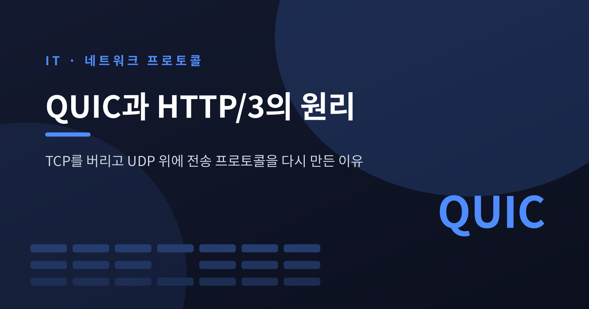
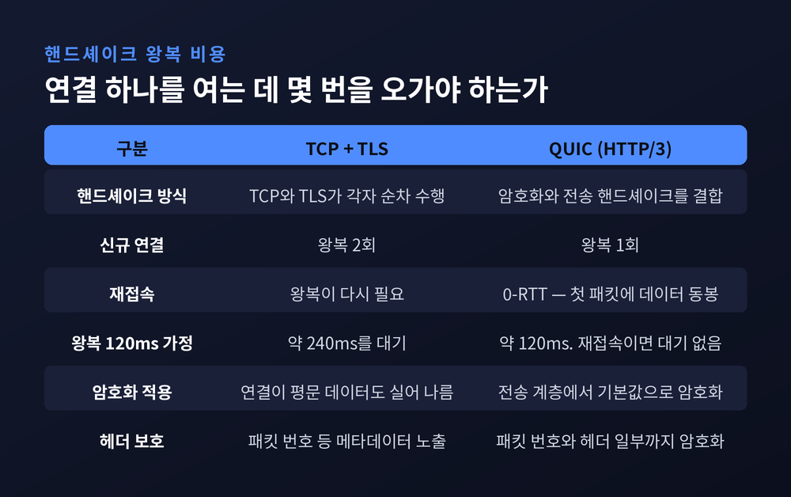
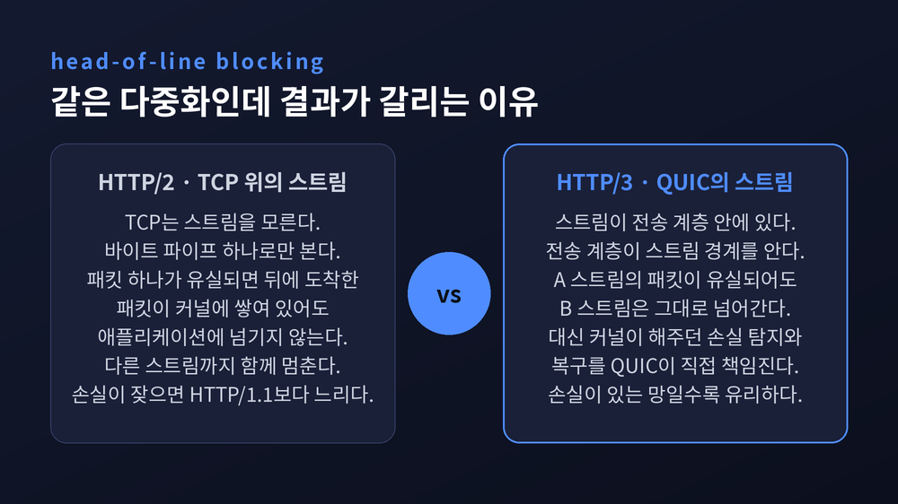
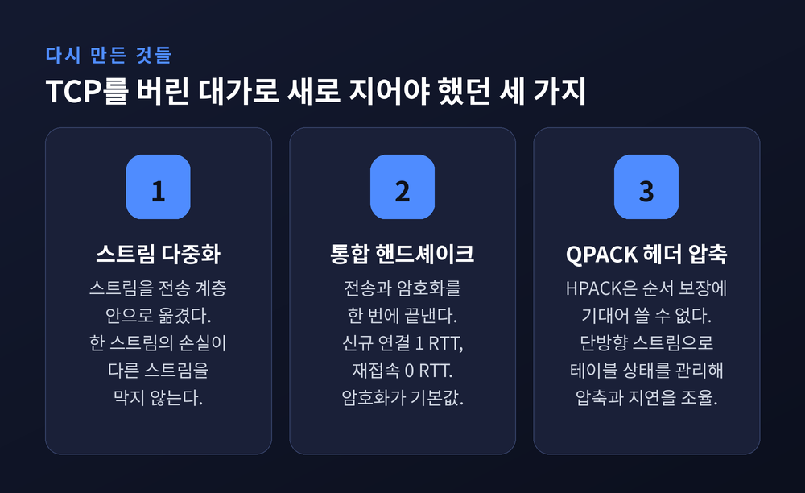
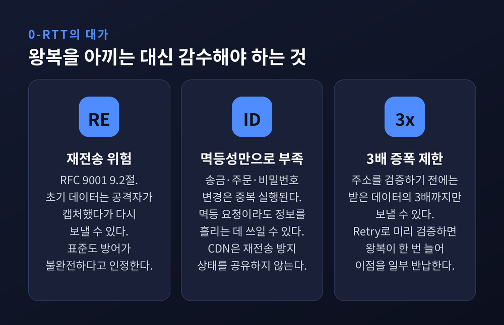
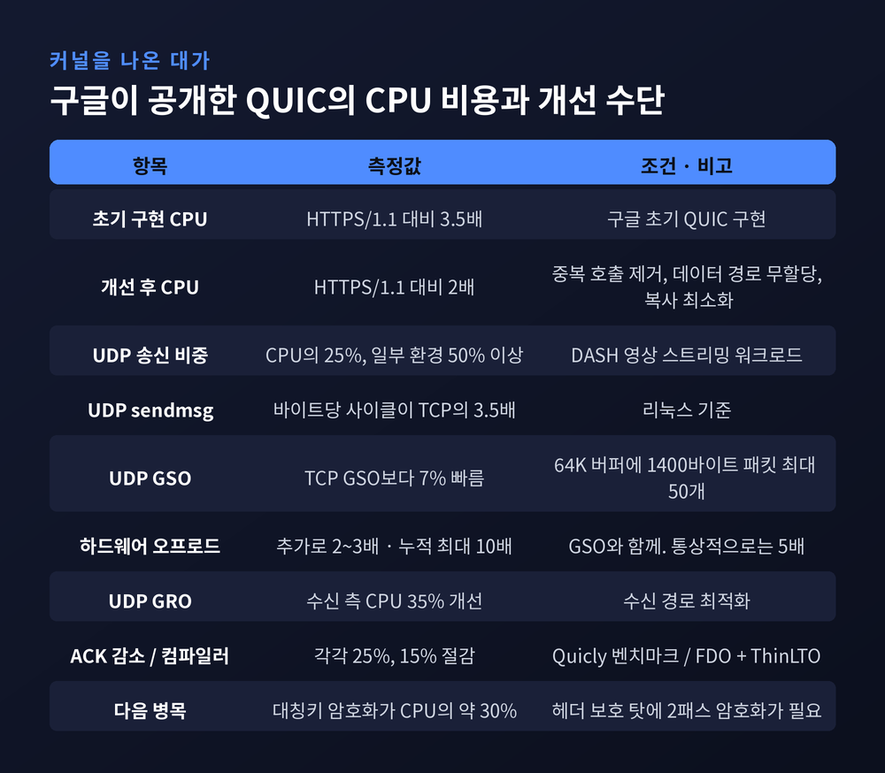
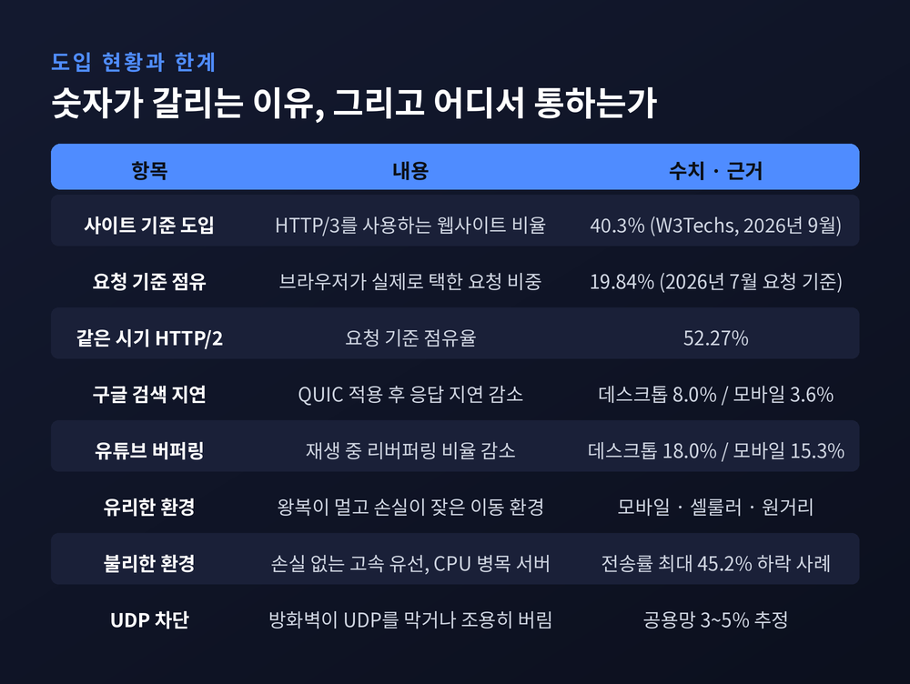

이번 글에서는 QUIC과 HTTP/3가 왜 TCP를 버리고 UDP 위에서 다시 만들어졌는지 정리해 보겠습니다. 핸드셰이크 왕복 비용부터 커널 밖으로 나간 대가까지, 설계 결정 하나하나의 이유를 따라가 봅니다.
세 줄 요약

기존 HTTPS 연결은 인사를 두 번 합니다.
먼저 TCP가 3-way 핸드셰이크로 연결을 엽니다. 그게 끝나야 TLS 핸드셰이크가 시작됩니다. 두 프로토콜이 각자 순서대로 셋업을 수행하니, 왕복이 두 번 필요합니다.
이 구조가 굳어진 데는 이유가 있습니다. TCP는 전송 계층이고 TLS는 그 위에 얹힌 보안 계층입니다. 계층을 깨끗하게 나눈 설계였고, 오랫동안 잘 작동했습니다.
문제는 왕복 한 번의 값이 생각보다 비싸다는 점입니다. 셀룰러망에서 왕복 지연이 120밀리초라면, 왕복 두 번은 240밀리초입니다. 페이지가 첫 바이트를 받기도 전에 0.24초가 사라집니다.
QUIC은 이 둘을 하나로 합쳤습니다. 클라우드플레어의 설명대로 "암호화 핸드셰이크와 전송 핸드셰이크를 결합"한 것입니다. 그래서 새 연결은 왕복 한 번, 이미 접속한 적 있는 서버라면 왕복 없이 데이터를 실어 보냅니다.
부수 효과도 큽니다. 예전엔 TCP 연결이 암호화된 데이터도, 암호화되지 않은 데이터도 실어 날랐습니다. 지금은 QUIC이 전송 계층에서 암호화를 기본값으로 세우기 때문에, 애플리케이션 데이터는 언제나 암호화됩니다. 심지어 패킷 번호와 헤더 일부까지 암호화합니다. TCP와 TLS가 분리돼 있던 시절에는 불가능했던 일입니다.

HTTP/2는 연결 하나에 스트림 여러 개를 얹는 방식으로 병렬성을 얻었습니다. 설계만 보면 완벽해 보입니다. 그런데 그 아래에는 여전히 TCP가 있었습니다.
TCP는 바이트를 순서대로 넘겨주겠다고 약속한 프로토콜입니다. 그리고 TCP는 HTTP/2가 말하는 '스트림'이 무엇인지 전혀 모릅니다. TCP 입장에서는 그냥 바이트 파이프 하나입니다.
그래서 이런 일이 벌어집니다. 패킷 하나가 유실되면, 그 뒤에 도착한 패킷들이 서버 커널에 멀쩡히 쌓여 있어도 TCP는 애플리케이션에 넘기기를 거부합니다. 재전송이 도착할 때까지 붙들어 둡니다.
문제는 그 버퍼 안에 다른 스트림의 데이터도 섞여 있다는 점입니다. 이미지 파일 하나 때문에 CSS도, 자바스크립트도, 텍스트도 함께 멈춥니다. 이것이 전송 계층에서 일어나는 head-of-line blocking입니다.
역설적인 결과도 관측됐습니다. 손실률 1퍼센트쯤 되는 불안정한 셀룰러 환경에서는, 같은 페이지가 HTTP/2보다 HTTP/1.1에서 더 빠르게 열리는 경우가 있습니다. HTTP/1.1은 연결을 여섯 개 따로 열기 때문에, 하나가 막혀도 나머지 다섯은 계속 움직이기 때문입니다. 측정 연구들은 손실률 0.5퍼센트 아래에서는 HTTP/2가 우세하지만, 2퍼센트를 넘으면 일관되게 뒤진다고 보고합니다.

QUIC의 해법은 단순합니다. 스트림을 전송 계층 안에 두는 것입니다.
전송 계층이 스트림의 경계를 알고 있으면, 스트림 A의 패킷이 유실되어도 스트림 B는 그대로 애플리케이션으로 넘어갑니다. 구글의 발표 자료는 QUIC을 "head-of-line blocking이 없는 다중 스트림 전송"이라고 요약합니다.
물론 대가가 따릅니다. UDP 데이터그램은 유실되어도 커널이 알아서 재전송해 주지 않습니다. 그래서 QUIC은 손실 탐지와 복구를 스스로 책임집니다. TCP가 커널에서 대신 해주던 일을 전부 직접 구현한 것입니다.
바꿔야 했던 것은 전송 계층만이 아니었습니다. HTTP/2의 헤더 압축 방식인 HPACK은 압축된 필드가 순서대로 도착한다는 보장에 기대고 있었습니다. QUIC은 그 보장을 주지 않습니다. 스트림마다 독립적으로 도착하니까요.
그래서 HTTP/3는 HPACK을 버리고 QPACK으로 갈아탔습니다. QPACK은 별도의 단방향 스트림을 써서 필드 테이블 상태를 관리합니다. 인코딩된 필드 섹션은 테이블을 수정하지 않고 참조만 합니다. 덕분에 인코더가 압축 효율과 지연 사이에서 균형점을 고를 수 있습니다.
QUIC 본체는 2021년 5월 RFC 9000으로, HTTP/3는 2022년 6월 RFC 9114로 표준이 되었습니다. QPACK은 같은 시기 RFC 9204로 나왔습니다.

재접속 시 왕복 없이 데이터를 보내는 0-RTT는 QUIC의 가장 화려한 기능입니다. 그리고 가장 조심해야 하는 기능이기도 합니다.
RFC 9001은 9.2절에서 분명히 말합니다. 0-RTT의 초기 데이터는 네트워크 공격자가 재전송할 수 있다고요. 공격자가 그 패킷을 캡처했다가 나중에 다시 보내면 그만입니다.
그래서 0-RTT에는 멱등한 요청만 실어야 한다는 원칙이 따라붙습니다. 다만 표준은 여기서 한 번 더 못을 박습니다. 멱등성만으로는 충분한 방어가 아니라고요. 멱등한 요청이라도 공격자가 암호화된 메시지의 정보를 흘리는 데 쓸 수 있습니다.
실무에서는 이 지점이 특히 까다롭습니다. 주문 넣기, 비밀번호 변경, 송금 같은 요청이 재전송되면 중복 실행됩니다. 게다가 CDN처럼 서버가 여러 곳에 흩어진 환경에서는 재전송 방지 상태가 공유되지 않아, 서버 측 방어가 무력해지기도 합니다.
증폭 공격을 막기 위한 제약도 있습니다. RFC 9000은 상대가 그 IP 주소에서 실제로 패킷을 받을 수 있는지 검증하기 전까지, 받은 데이터의 세 배까지만 보내도록 제한합니다. 서버가 굳이 핸드셰이크 전에 주소를 검증하고 싶다면 Retry 패킷을 쓸 수 있습니다만, 이 경우 왕복이 한 번 더 늘어납니다. 아껴둔 왕복을 다시 반납하는 셈입니다.

QUIC은 유저스페이스에 구현됩니다. 운영체제를 갈아엎지 않고도 프로토콜을 고칠 수 있다는 뜻입니다.
TCP는 그렇지 않았습니다. 커널에 박혀 있으니 변경 주기가 수년 단위였습니다. 새 혼잡제어 알고리즘 하나를 배포하려면 전 세계가 OS를 업데이트하기를 기다려야 했습니다. QUIC은 애플리케이션 배포 주기로 바꿉니다. 구글은 gQUIC 네 개 버전과 IETF QUIC 드래프트 세 개를 동시에 굴리면서 운영했습니다. 발표자는 그것을 "달리는 차의 타이어를 갈아 끼우는 것과 비슷하다"고 표현했습니다.
그런데 대가가 만만치 않습니다. CPU입니다.
구글이 SIGCOMM EPIQ 2020에서 공개한 수치는 꽤 솔직합니다. 초기 구현은 HTTPS/1.1 대비 CPU를 3.5배 썼습니다. 비싼 함수를 중복 호출하지 않고, 데이터 경로에서 메모리 할당을 없애고, 복사를 줄이는 정도의 개선만으로 2017년 1월 기준 2배까지 낮췄습니다. 그래도 여전히 2배입니다.
병목이 어디였는지도 구체적입니다. UDP 송신이 해당 워크로드 CPU의 25퍼센트를 잡아먹었고, 일부 환경에서는 50퍼센트를 넘었습니다. 리눅스에서 UDP sendmsg는 TCP 대비 바이트당 최대 3.5배의 사이클을 소모합니다.
해결책들도 하나씩 쌓아 올렸습니다. UDP GSO를 쓰면 64K 버퍼 하나에 1400바이트 QUIC 패킷을 최대 50개까지 담아 커널이 쪼개게 할 수 있습니다. TCP GSO보다 7퍼센트 빠릅니다. 여기에 하드웨어 오프로드를 얹으면 2~3배가 더 붙습니다. 누적 가속은 이상적으로 열 배, 통상적으로 다섯 배 정도입니다. 수신 쪽에서는 UDP GRO가 CPU를 35퍼센트 줄였습니다. ACK를 덜 보내는 것만으로도 25퍼센트를 아꼈고, 컴파일러 최적화로 15퍼센트를 더 얻었습니다.
그리고 아직 남은 숙제가 있습니다. UDP 송신이 충분히 빨라지고 나면, 이번엔 대칭키 암호화가 CPU의 약 30퍼센트를 차지합니다. IETF QUIC은 헤더 보호 때문에 2패스 암호화가 필요한데, 작은 암호화 연산은 대량 암호화보다 훨씬 비쌉니다.

QUIC 연결은 네트워크 경로 하나에 묶여 있지 않습니다.
TCP 연결은 출발지 IP, 출발지 포트, 목적지 IP, 목적지 포트 네 값으로 식별됩니다. 넷 중 하나만 바뀌어도 그 연결은 다른 연결이 됩니다. 그래서 스마트폰이 와이파이에서 셀룰러로 넘어가는 순간, 열려 있던 연결은 전부 죽고 처음부터 다시 시작해야 했습니다.
QUIC은 연결 식별자, 곧 Connection ID로 연결을 구분합니다. IP나 포트가 바뀌어도 연결 ID가 같으면 같은 연결입니다. 클라우드플레어의 표현을 빌리면, L4 전송 연결을 L3 IP 흐름에서 분리한 것입니다.
이 설계는 NAT 리바인딩처럼 주소 매핑이 바뀌는 상황에서도 연결을 지켜 줍니다. 다만 조건이 붙습니다. 길이가 0인 연결 ID는 라우팅에 연결 ID가 필요 없을 때만 쓸 수 있습니다. 같은 로컬 IP와 포트에서 연결을 다중화하면서 길이 0 연결 ID를 쓰면, 마이그레이션과 NAT 리바인딩에서 실패합니다. 그래서 표준은 NAT 뒤에 있을 수 있는 클라이언트가 있다면 길이가 0이 아닌 연결 ID를 쓰라고 강하게 권합니다.
한 가지 덧붙이면, 현재 버전의 QUIC에서 마이그레이션할 수 있는 쪽은 클라이언트뿐입니다. 서버는 옮겨 다닐 수 없습니다.
RFC 9002는 TCP NewReno와 비슷한 송신 측 혼잡 제어기를 기본으로 명세합니다. 하지만 진짜 중요한 문장은 그다음에 나옵니다.
QUIC이 혼잡 제어에 제공하는 신호는 범용이며, 서로 다른 알고리즘을 지원하도록 설계되었다는 것입니다. 송신자는 CUBIC 같은 다른 알고리즘을 일방적으로 골라 쓸 수 있습니다. 조건은 하나입니다. RFC 8085의 혼잡 제어 가이드라인을 반드시 지켜야 합니다.
혼잡제어가 부품이 되면 어떤 일이 가능해지는지는 BBR이 보여 줍니다. 현재 BBRv3는 google.com과 유튜브의 대외 공개 인터넷 트래픽 전체에 쓰이고 있습니다. 구글은 TCP와 QUIC 양쪽에서 BBRv3와 v1을 A/B 비교했고, 재전송률이 12퍼센트 줄었다고 보고했습니다. 검색과 유튜브 재생 시작 지연은 0.2퍼센트 개선됐습니다. 손실이 줄어 복구가 덜 필요해진 결과로 봅니다.
수치만 보면 소박합니다. 다만 이 정도 규모에서 0.2퍼센트가 갖는 무게는 다릅니다.
먼저 성과부터 짚겠습니다. 구글이 SIGCOMM 2017에서 공개한 결과는 이렇습니다. QUIC은 검색 응답 지연을 데스크톱에서 8.0퍼센트, 모바일에서 3.6퍼센트 줄였습니다. 유튜브 재생 중 버퍼링이 발생하는 비율은 데스크톱 18.0퍼센트, 모바일 15.3퍼센트 감소했습니다. 당시 QUIC은 이미 구글 전체 이그레스 트래픽의 3분의 1을 차지하고 있었고, 전 세계 인터넷 트래픽의 약 7퍼센트로 추정됐습니다.
현재 보급률은 어떤 잣대를 쓰느냐에 따라 숫자가 크게 갈립니다.
W3Techs의 2026년 9월 조사에 따르면 HTTP/3는 전체 웹사이트의 40.3퍼센트가 사용합니다. 구글, 페이스북, 유튜브, 인스타그램, 링크드인, 빙 같은 대형 사이트는 대부분 포함돼 있습니다.
그런데 요청 단위로 보면 이야기가 달라집니다. 클라우드플레어 레이더 데이터를 인용한 한 분석에 따르면, 2026년 7월 요청 기준 HTTP/3 비중은 19.84퍼센트로 처음 20퍼센트 아래로 내려갔습니다. 같은 기간 HTTP/2는 52.27퍼센트로 오히려 점유를 늘렸습니다.
두 숫자가 다른 이유는 측정 단위가 다르기 때문입니다. 사이트가 "지원한다"고 광고하는 것과 브라우저가 실제로 그 길을 택하는 것은 별개입니다. HTTP/3는 alt-svc 헤더나 DNS 레코드로 먼저 발견되어야 브라우저가 연결을 시도합니다. 지원 가능성은 넉넉히 올라갔지만, 회선 위를 흐르는 실제 트래픽은 정체 상태에 가깝습니다.

QUIC의 발목을 잡는 첫 번째는 UDP 차단입니다.
구글이 초기 실험에서 관측한 UDP 장애는 전체의 5퍼센트였습니다. 속도 제한이 0.3퍼센트, 액세스 네트워크 경계에서의 차단이 0.2퍼센트, 사용자에 가까운 액세스 네트워크에서의 차단이 4.5퍼센트였습니다. 최근 추정으로도 UDP 443 포트 완전 차단이 공용 네트워크의 3~5퍼센트에 영향을 준다고 봅니다. 기업망은 그 비율이 훨씬 높을 것으로 보이지만, 대체로 측정되지 않은 영역입니다.
더 곤란한 것은 조용한 실패입니다. 방화벽이 UDP 패킷을 아무 응답 없이 버리면, QUIC은 오지 않을 응답을 기다리며 멈춰 있습니다. 브라우저의 폴백 로직이 있긴 하지만 완벽하지는 않습니다.
두 번째 한계는 조금 뜻밖입니다. 빠른 회선에서 QUIC이 더 느릴 수 있다는 것입니다.
2024년 ACM 웹 콘퍼런스에 발표된 연구는 빠른 인터넷 환경에서 UDP와 QUIC, HTTP/3를 쌓은 스택이 TCP와 TLS, HTTP/2 조합보다 데이터 전송률이 최대 45.2퍼센트까지 떨어진다고 보고했습니다. 원인은 수신 측 처리 오버헤드였습니다. 과도한 데이터 패킷 수와 유저스페이스에서 처리하는 ACK가 문제였습니다.
이유를 생각해 보면 자연스럽습니다. 최신 네트워크 카드는 TCP를 위한 체크섬 오프로딩과 SSL 오프로딩을 하드웨어에 내장하고 있습니다. QUIC은 아직 거기까지 가지 못했습니다. 프로토콜이 하드웨어보다 앞서 나간 상태입니다.
정리하면 이렇습니다.
QUIC은 TCP가 못나서 버린 것이 아닙니다. TCP는 커널 안에 있어서 고칠 수 없었고, 미들박스가 그 형태를 굳혀 놓아 더 이상 진화할 수 없었습니다.
QUIC의 진짜 혁신은 왕복 한 번을 아낀 것이 아니라, 프로토콜을 다시 고칠 수 있는 자리로 옮겨 놓은 것입니다.
물론 값을 치렀습니다. CPU를 더 쓰고, UDP를 막는 네트워크에서는 아예 통하지 않으며, 손실 없는 고속 회선에서는 오히려 뒤집니다. 2026년 9월 현재 요청 기준 점유율이 20퍼센트 언저리에 머무는 것도 그래서일 것입니다.
그래도 방향은 분명해 보입니다. 왕복이 멀고 손실이 잦고 네트워크가 자주 바뀌는 곳 — 그러니까 우리가 하루 대부분을 보내는 모바일 환경에서, QUIC이 겨냥한 문제는 여전히 그대로 남아 있습니다.
TCP를 버릴 만한 일이었냐고 물으신다면, 적어도 지금은 그렇다고 답하겠습니다.